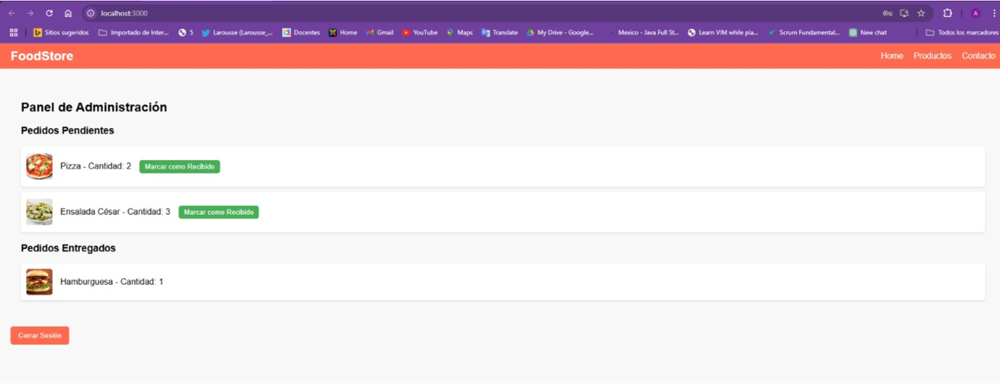
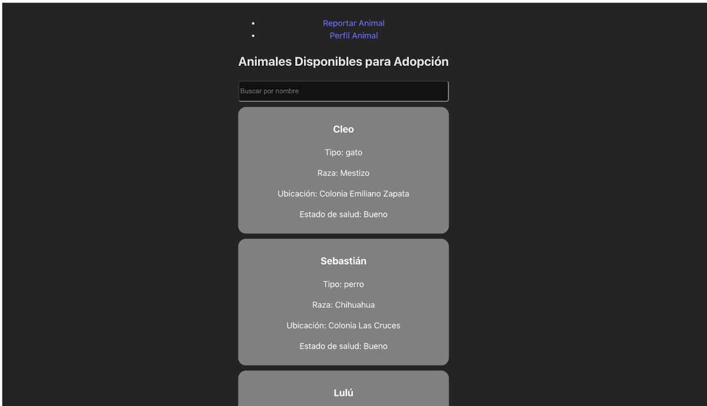
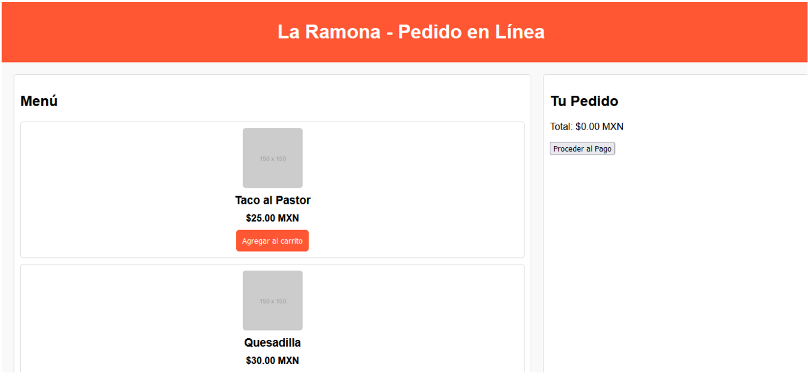

Portafolio Unidad 3
Actividad preliminar. Retomando mi primer sprint
Actividad 1. Primera fase de desarrollo, revisión y ajuste de los Sprints
Actividad 2. Segunda fase de desarrollo, revisión y ajuste de los Sprints y el backlog
Actividad 3. Tercera fase de desarrollo, revisión y ajuste de los Sprints y el backlog
Actividad integradora. Producto final U3
Portafolio Unidad 4
Actividad 1. Reunión de revisión inicial
Actividad 2. Reunión para revisión de modificaciones
Proyectos en Github
Proyecto FoodStore
Proyecto Mascotas de Acapulco
Proyecto La Ramona, antojitos mexicanos
Proyecto Integrador
Unidad: 4
Asignatura: Proyecto II
Alumnos
Valeria Arquieta González
Jaime Alberto Padron Reyna
Rosina Testa Morel
Proyecto Food Store

Ver tablero
Proyecto Mascotas de Acapulco

Ver tablero
Proyecto La Ramona, antojitos mexicanos

Ver tablero